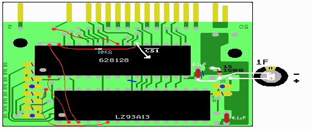

９ ゴールドキャパシタ、ダイオードの取り付け
さて、いよいよ最後です。ゆとりあるコテさばきをしましょう。これらの部品の取り付け位置も、実体図を見れば分かるでしょう。

図６ ゴールドキャパシタ＆ダイオード
回路図とよく見比べてください。ゴールドキャパシタの＋側を適当な５Ｖとつなぎます。
そして、−側はＳＲＡＭのＧＮＤとつなぎます。また、ＳＲＡＭのＧＮＤからはダイオード１Ｓ１５８８を通して、
基板のＧＮＤにつなぎます。ダイオードはラインがはいっている方が基板のＧＮＤ側にくるようにします。
ダイオードやゴールドキャパシタの向きに気をつけて下さい。
ゴールドキャパシタは、カートリッジの箱の中で揺れるとその内にリード線が切れて、
メモリーの内容が消えてしまうので、動かない様にティッシュを詰めるとか、両面テープで固定するとか、
リード線でなく、スズメッキ線にチューブを被せて絶縁したものを使う等して、
リード線が切れないような対策をしておくといいでしょう。